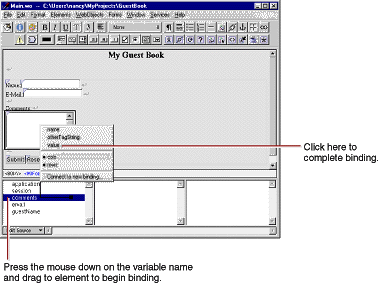
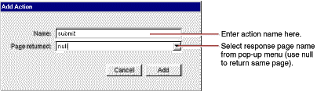

| PATH |

When a user enters information in form elements, your application needs a way of accessing that information. This is done by binding the form elements to variables in your application. When the user submits the form, WebObjects puts the data into the variables you've specified.
Your application typically processes the data and returns a new page (or the same page) displaying information that makes sense based on the user's input. The information displayed is usually represented by other dynamic elements that are bound to variables and methods in your code.
This process of receiving a request (triggered by actions such as submitting a form or clicking a hyperlink) and responding by returning a page is known as the request-response loop. This loop is at the heart of WebObjects programming.
In this tutorial, you'll have WebObjects return the same page, with the information you received from the user displayed in a slightly different format at the bottom.
In this section, you'll declare individual variables in
your code file (Main.java)
to hold the name, e-mail address, and comments entered by a single
guest. Later on, you'll structure this information differently
in order to work with data from multiple users.
WebObjects Builder allows you to declare variables without having to edit your source file directly. At the bottom of the panel there is a pull-down menu titled Edit Source. It has five items:
Add
Key allows you to add a key to
your source file. A key can be either an instance variable or a
method that returns a value. Add Action allows
you to add the template for an action method,
which is a method that takes no parameters and returns a component
(the next page to be displayed).Delete Key allows
you to delete a key from your source file by deleting the instance variable
or the method that returns a value.Rename Key allows
you to rename a key in your source file by renaming the instance variable
or the method that returns a value.View Source File opens
the source file in a Project Builder window.The Add Variable/Method panel opens.
![[image: ../Art/wobaddkey.gif]](../Art/wobaddkey.gif)
You have just created a variable called guestName of
type String. It appears in the first column of the object browser.
A declaration for guestName also
appears in Main.java, which
you'll edit later.
email and comments in
the same way (they are also of type String).Note: You may also add variables by editing the source file in Project Builder. Remember to save the file after editing in Project Builder to update WebObjects Builder. |
Each dynamic element contains several attributes. These attributes determine what happens when the element is displayed or when a form element is submitted. When you bind an element, you actually bind one or more of its attributes.
For example, a WOText element (which represents a multi-line text area) is defined as having two attributes:
value specifies
the string the user enters in the text area.name specifies
a unique identifier for the text area.In this tutorial, the only attribute you are concerned with
is value, which represents
the string entered by the user in the comments field. You'll bind
this to the comments variable. You
don't need to bind the name attribute
in this application. In a later example, you'll bind more than
one attribute of an element.
comments variable
and holding down the mouse button while dragging to the Comments
text area. Then release the mouse button.

A menu appears, displaying the attributes for the text area.
In the Dynamic Inspector, comments appears
in the Binding column next to the value attribute
of the text area, indicating that the binding has been made. Also,
the text comments appears in the text field to show that it has
been bound.
guestName variable
using another technique. Select the Name WOTextField element. In
the Inspector, select the Dynamic Inspector.The Inspector
displays the value attribute
in red, indicating that this attribute must be bound; otherwise,
WebObjects displays an error message when you try to run your application.
value. Type g and
press Enter. The Inspector fills in the rest of the "guestName"
key for you.email variable
to the corresponding text field using one of the methods above.When the user clicks the Submit button, your application will
respond by redisplaying the page with the submitted information
shown at the bottom. To make this happen, you implement an action
method and bind that method to the action attribute
of the WOSubmitButton.

null.The
value returned by an action method represents the next page (component)
to be displayed. When you return null,
the current page is redrawn. In a later task, you'll see how to
return a new component.
The submit action
appears below a horizontal line in the first column of the object browser.
submit action
in the object browser to the Submit button (press the mouse button
down on the action, drag to the button, and release the mouse button). A menu appears with the Submit button's attributes.
You just bound the submit method
you created to the action attribute
of the WOSubmitButton. You don't need to write any additional
code, so your application is now ready to run. However, you may
want to look at your source file.
Project Builder becomes active and displays
the code for your component (in Main.java).
You'll notice that this file contains declarations for the variables
you created earlier, as well as a declaration for the submit action
method.
// Generated by the WebObjects Wizard ...
import com.webobjects.foundation.*;
import com.webobjects.appserver.*;
import com.webobjects.eocontrol.*;
import com.webobjects.eoaccess.*;
public class Main extends WOComponent {
protected String guestName;
protected String email;
protected String comments;
public Main(WOContext context) {
super(context);
}
public WOComponent submit() {
return null;
}
}
© 2001 Apple Computer, Inc.